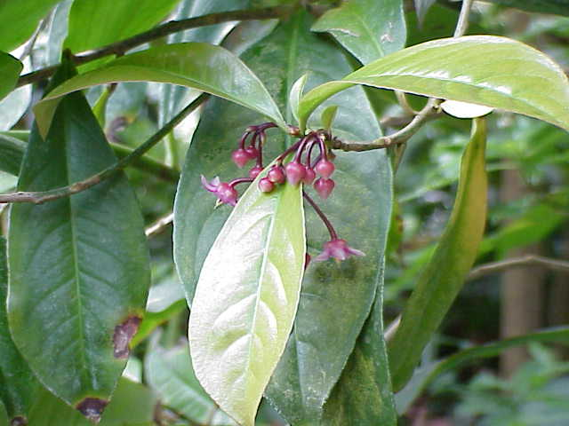

|
ECONOMICALLY
IMPORTANT PLANTS OF INDIA |
| Under-utilized Food and Fodder species and their wild relatives | Contributed by Ms.M.L Annapurna And Dr. Dhanapal, UAS, Bangalore |
Ardisia solanacea Roxb.
Taxonomic Details

----- Correct Name
----- Classification
----- Synonyms
----- Common Names
Other Biological Details
----- Habit and Habitat
----- Diagnostic Features
----- Reproductive Biology
---------- Breeding System
---------- Phenology
---------- Pollinators
---------- Seed Biology
----------Seed Germination
------ Cultivation
----- Major Pests and Diseases
Economic Potential and Uses
----- Parts Used
----- Uses
----- Harvesting Practices
----- Produce and Products
----- Chemistry
----- Processing Techniques
----- Other uses
----- Economic Potential to the
Country
----- Export Potential
Miscellaneous Information
Literature
HABIT & HABITAT:
It is found throughout India, excepting desert India. i.e.
it is commonly seen along streams, Banks of River and streams, evergreen forest,
Forests, Ghat's, hills, mixed forests, moist deciduous forest, Moist forest,
Ravines & Slopes, Sal forests, semi evergreen forest, Stream banks.
Availability :
BioticZone: Alpine Western Himalaya, Kanara, Konkan, Subtropical Himalayas,
Tropics, West Coast, Western alpine Himalaya and Western Ghats.
Misc: Amboli, ambolighat, Anekad, Attur, Bhedhshi, Biligirirangan hills,
Butpal-Ordofond,
Charmadi ghats, Corbett National Park, danoli, Dinarai forest, Dukanwad, Forest
districts, Hollong, Kabirchabutra, Khallari, Konal, Kotigehar on the way to
Kalhattigiri, Kumbeshwaar, Linga Sakhal, Mercara, Miao forest, Namdapha,
Pattakarimb, Nilambur, Pushpagiri, ramghat, Salkumar, Sivapur, Someswar tank, temple point,
Tinai, Tolpetty, Tudal village forest, wasuli, Way to Kannoth,
Country: China, India and Malaya.
Zone: Central,East, North, North East, South and West zone.
State: Arunachal Pradesh, Bihar, Goa Daman Diu, Himachal Pradesh, Karnataka,
Kerala, Madhya Pradesh, Maharashtra, Tamil Nadu and West Bengal.
District: Bangalore, Bastar, Bilaspur, Bombay, Cannanore, Champaran,
Chamrajnagar, Chikmaglore, Coimbatore, Dakshin Kannada, Dharmapuri, Goa, Hassan,
Kangra, Kodagu, Madurai, Malappuram, Mysore, Nilgiri, Pulni, Raigarh, Raipur, Salem,
Shimoga, Sindhudurg, South Arcot, Surguja, Tiruchi, Tirunelveli, Trichurapalli and Uttar
Kannada.
Taluk: Canacona, Chamrajnagar, Gundlpet, Kudal, Satari and Sawantwadi.
Status :
DIAGNOSTIC FEATURES
Branch herb,upto 2 m high,leaves alternate or scattered,obovate or
lanceolate;entire,acute coriaceous,cuneate at base, upto 18x 6 cm.Inflorescence
an axillary corimbe;pedicels slightlt thickeened at apex.Calyx 5, free to
base,ovate,acute ,gland-dotted,ceolate on the margin . corolla 5, rosy,connate
at base,ovate,acute,fleshy.Stamens 5 shorter than the corolla,included or
slightly exesterted;anthers lanceolate,acute.Ovary 1-celled;ovules many on a
globose placenta;style short;stigma small.Fruit a globose berry.
Breeding System :
Phenology :
Flowering can be seen in all seasons of the year, and there is a report of flowering specifically during April-June
and also during May-November.
Pollinators: MAJOR PESTS & DISEASES
Seed Biology :
Seed Germination:
Cultivation:
Pests:
Diseases:
Economic
Potential and Uses
Parts used:
Roots
Uses:
Harvesting
Practices
Produce and Products
.jpg){kind=link}